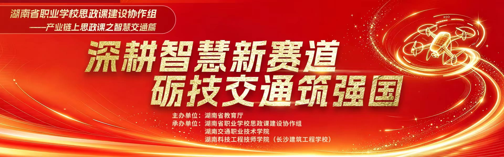
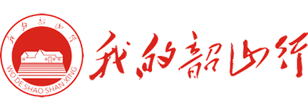
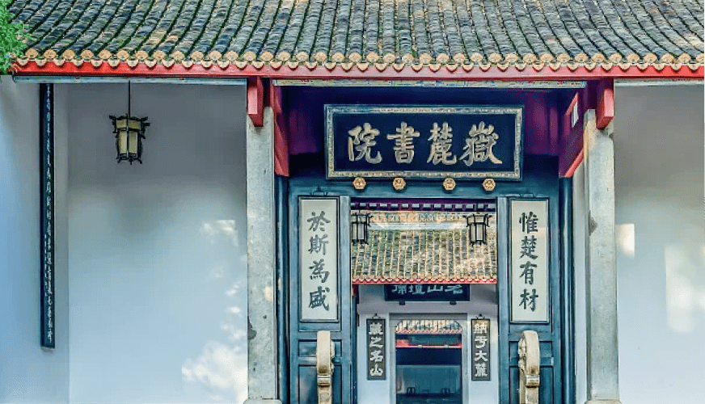

市州平台
常德
湘西土家族苗族自治州
登录
注册
无障碍浏览
首页
中小学
职业教育
高等教育
服务大厅
AI专区
活动竞赛
湖南中小学智慧教育平台
德育
我是接班人
荐
学习新思想
未来建设者
荐
心理与健康
党史学习
爱国主义
更多
安全教育
个人信息保护
安全过寒假2025
生命与安全
网络安全
课程学习
学生自主学习
智趣新课堂
荐
体育
特色资源
体育与健康课程
运动技能
体育活动
健康服务
美育
特色资源
艺术课程
艺术技能
艺术活动
劳动教育
特色资源
劳动光荣
劳动导航
劳动智慧
教师服务
教师备课授课
数字教研工作室
新
中小学教师研修平台
教改经验
优秀课例
荐
研修专题
课后服务
特殊教育
荐
AI专区
荐
家庭教育
读书平台
湖南职业教育智慧教育平台
思政课
强国故事
职业体验
职业网络大课堂
荐
行业数字博物馆
专业与课程服务
国家课程/资源
荐
专业资源库
在线精品课
视频公开课
开源课程
丝路同声
虚拟仿真实训
实训软件中心
荐
企业实操案例
虚拟仿真中心
教师能力提升
教师培训课程
大赛优秀作品
荐
学生竞赛指导
职业竞赛资源
荐
大国工坊
网络大讲堂
专题栏目
德育
教材资源中心
中国科学院
数字校园典型案例
工匠风采
大国工匠
职教百家谈
匠心筑梦
奇技青春
匠心青年说
智慧教研室
荐
创业课程
荐
教材资源
荐
AI专区
教育申报
院校质量监测
湖南高等教育智慧教育平台
思政课
奋斗青春号
荐
思政课
红色筑梦之旅
课程
线上一流课程
荐
在线开放课程
荐
视频公开课
资源共享课
新开课程
院校课程
荐
教材
重大主题
马克思主义理论研究和建设工程重点教材
首届全国教材建设奖全国优秀教材
国外优秀教材
教师教研
教创赛获奖课程
教师专业发展
虚拟教研室
荐
思政课备课资源
创课平台
创业课程
创课平台
课外成长
主题教育
校园文化
心理健康
安全教育
社会实践活动
专题
高校学生就业能力提升专区
人工智能教学公共服务开放应用专区
思政课
红色筑梦之旅
体育
虚拟仿真
荐
研究生教育
荐
慕课西部行
AI专区
教育申报
资讯
服务大厅
中小学服务
湖南省中考成绩查询
中小学生学籍查询
湖南省学校机构代码查询
高考成绩查询
高中学业水平考试成绩查询
湖南省普通高中毕业生信息查询
职业教育服务
高考成绩查询
高考录取状态查询
湖南省中等职业学校学历证书查询
湖南省学校机构代码查询
高等教育服务
毕业生档案查询
普通高等学校毕业生托管档案证明服务
就业报到证查询
大学英语四/六级考试（CET）成绩查询
公共服务
湖南教师研修平台
湖南24365大学生就业服务平台
读书平台
问卷系统
人工智能中心
AI试验场
教育专用学科垂类大模型
AI工具
基础教育AI专区
学AI
用AI
政策法规
职业教育AI专区
人工智能通识课
人工智能系列微课程
人工智能应用场景课
高等教育AI专区
人工智能教学公共服务开放应用专区
人工智能课程
研究生专区
活动竞赛
2026年湖南省中小学（幼儿园）教师在线集体备课大赛
荐
2026年湖南省教师数字素养提升实践活动
荐
2026年湖南省教师人工智能应用案例征集活动
荐
教育申报

‹
›

湖南中小学智慧教育平台
湖南中小学
智慧教育平台
进入平台
优秀课例
德育
安全教育
课程学习
体育
美育
劳动教育
教师服务
家庭教育
课后服务
优秀课例
读书平台
基础教育AI专区
➜
政务服务
➜
湖南省中考成绩查询
中小学生学籍查询
湖南省学校机构代码查询
高考成绩查询
高中学业水平考试成绩查询
湖南职业教育智慧教育平台
湖南职业教育
智慧教育平台
进入平台
职业体验
专业资源库
精品课程
虚拟仿真
教师能力
数字教材
劳动教育
创业课程
职业教育AI专区
➜
政务服务
➜
高考成绩查询
高考录取状态查询
湖南省中等职业学校学历证书查询
湖南高等教育智慧教育平台
湖南高等教育
智慧教育平台
进入平台
一流课程
虚拟仿真
创业课程
数字图书馆
院校课程
➜
高等教育AI专区
➜
政务服务
➜
毕业生档案查询
普通高等学校毕业生托管档案证明服务
就业报到查询
公共服务
湖南教师研修平台
进入平台
教师培训
证书查询
学分登记
资源中心
湖南24365大学生就业服务平台
进入平台
招聘信息
就业资讯
双选会
宣讲会

读书平台
进入平台
青少年学生读书空间
教师读书空间
家长读书空间
×
选择登录
湖南智慧教育
进入登录
智教中国通行证
进入登录
无障碍浏览
放大文字
高对比度
关闭